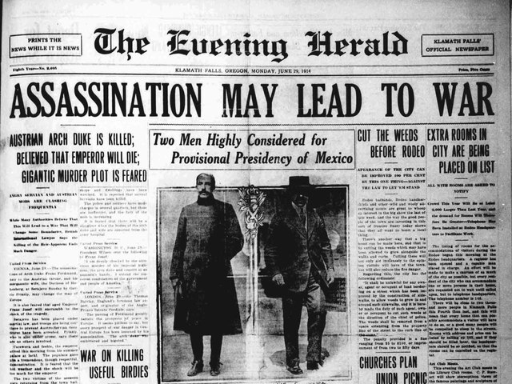

also known as the Great War, was a global conflict between
two coalitions: the Allies (or Entente) and the Central Powers.
Fighting took place mainly in Europe and the
Middle East, as well
as in parts of Africa and the Asia-Pacific, and in Europe was
characterised by trench warfare and the use
of artillery, machine
guns, and chemical weapons (gas).
World War I was one of the deadliest conflicts in history, resulting
in an estimated 9 million
military dead and 23 million wounded,
plus up to 8 million civilian deaths from causes including genocide (including the Armenian genocide). The movement of large numbers of people was a major factor in the Spanish flu pandemic, which killed millions.

The causes of World War I included the rise of Germany and decline of the Ottoman Empire,
which disturbed the balance of power in
Europe, as well as increased economic competition between nations
triggered by new waves of industrialisation
and imperialism. Growing tensions between the great powers and in the Balkans reached a break
ing point on 28 June 1914, when a
Bosnian Serb named Gavrilo Princip assassinated Archduke
Franz Ferdinand, heir to the Austro-Hungarian throne. Austria-Hungary
held Serbia responsible, and declared war on 28 July.
Russia mobilised in Serbia's defence, and by 4 August, Germany, Russia, France, and the
United Kingdom were drawn into the war, with the Ottomans joining in Novembe
r of the same year. Germany's strategy in 1914 was to quickly
defeat France, then to transfer its forces
to the Russian front. However, this failed, and by the end of
the year the Western Front consisted of a continuous line of trenches stretching from the English
Channel to Switzerland. The Eastern Front was more dynamic, but neither side could gain
a decisive advantage, despite costly offensives. Italy, Bulgaria, Romania, Greece and others joined in from 1915 onward.
 In April 1917, the United States entered the war on the Allied side following Germany's resumption
In April 1917, the United States entered the war on the Allied side following Germany's resumption of unrestricted submarine warfare against Atlantic shipping. Later that year, the Bolsheviks
seized power in the Russian October Revolution;
Soviet Russia signed an armistice, followed by a separate peace in March 1918. That month,
Germany launched an offensive in the
west, which despite initial successes left the German Army
exhausted and demoralised. A successful Allied counter-offensive
from August 1918 caused a collapse of the German front line.
By early November, Bulgaria, the Ottoman Empire and Austria-Hungary had each signed armistices with the Allies, leaving Germany isolated. Facing a revolution at home, Kaiser Wilhelm II abdicated on 9 November, and the war ended with the Armistice of 11 November 1918. The Paris Peace Conference of 1919–1920 imposed settlements on the defeated powers, most notably the Treaty of Versailles,
by which Germany lost significant territories, was disarmed, and was
required to pay large war reparations to the Allies.
The dissolution of the Russian, German, Austro-Hungarian, and Ottoman Empires redrew national boundaries and resulted in the
creation of new independent states, including Poland, Finland,
the Baltic states, Czechoslovakia, and Yugoslavia. The League
of Nations was established to maintain world peace, but its
failure to manage instability during the interwar period contributed to the outbreak of World War II in 1939